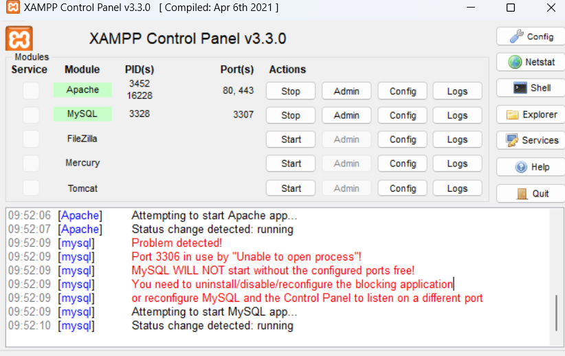
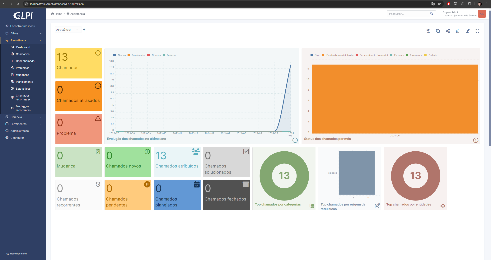

Introdução ao GLPI
Instalação do GLPI
O GLPI é um sistema de gerenciamento de TI que permite adicionar ativos, criar chamados, gerenciar usuários, entre outras funcionalidades. Vamos abordar o processo de instalação do GLPI, que pode ser realizado de três maneiras básicas:
Métodos de instalação
- XAMPP: Uma distribuição Apache fácil de instalar, contendo PHP, MySQL e Perl.
- WSL: Subsistema Windows para Linux.
- VirtualBox: Uma máquina virtual que representa um computador físico.
Meu processo de instalação e configuração
Primeiro Passo
Optei pelo XAMPP para executar o GLPI. O primeiro passo é instalar o XAMPP. Ao acessar o site, há três opções de download. Utilizei a versão para Windows:
| Versão | Soma de verificação | Tamanho |
|---|---|---|
| 8.0.30 / PHP 8.0.30 | md5 sha1 | 144mb |
Com o XAMPP instalado, √© necessário baixar a versão mais recente do GLPI, que √© a GLPI 10.0.15. Agora temos tudo o que precisamos para utilizar o GLPI. üòÑ
Segundo Passo
Na segunda parte, extraia a pasta GLPI baixada e mova-a para a pasta do XAMPP. Dentro da pasta XAMPP, localize a pasta htdocs e coloque a pasta do GLPI lá. Agora o XAMPP pode usar as funcionalidades do GLPI.
Terceiro Passo
Nota: Esta terceira parte é relevante se você já tiver o MySQL instalado, pois tanto o MySQL quanto o XAMPP utilizam a porta 3306. Se você já estiver utilizando o MySQL, precisará fazer algumas configurações adicionais no XAMPP. Se não tiver esse problema, pule para o Quarto Passo.
O erro pode ser:
09:25:43 [mysql] Problem detected!
09:25:43 [mysql] Port 3306 in use by "Unable to open process"!
09:25:43 [mysql] MySQL WILL NOT start without the configured ports free!
09:25:43 [mysql] You need to uninstall/disable/reconfigure the blocking application
09:25:43 [mysql] or reconfigure MySQL and the Control Panel to listen on a different port
Se você receber este erro, vá em ACTIONS e no config do módulo Apache e do módulo MySQL e altere a porta padrão de 3306 para 3307. No módulo do MySQL, edite o arquivo my.ini, encontre onde a porta 3306 está definida e altere para 3307, depois salve o arquivo. Use Ctrl + F para facilitar a busca. Repita o processo no arquivo php.ini do módulo Apache. Agora o seu banco de dados deve rodar na porta 3307.

Quarto Passo
Com tudo pronto, inicie o Apache e o MySQL no XAMPP. Em seguida, abra o navegador e acesse http://localhost/glpi. Você será direcionado para a página principal do GLPI.
Primeiro Passo GLPI
Escolha o idioma padrão para o sistema GLPI. No meu caso, utilizei o português.
Segundo Passo GLPI
Aceite a nota de licença do GLPI e clique em Continuar.
Terceiro Passo GLPI
Escolha a opção Instalar.
Quarto Passo
Você verá algumas configurações faltando. As únicas necessárias são gd e intl. No Module Apache, abra o config do php.ini e descomente as linhas correspondentes a gd e intl, salvando o arquivo.

Atualize o navegador e continue.
Quinto Passo
Crie uma conexão com o banco de dados:
| Endereço do servidor | Usuário SQL | Senha |
|---|---|---|
| localhost | root |
Clique em Continuar.
Sexto Passo
Crie um banco de dados. Nomeei o meu de glpi. Clique em Continuar.
Sétimo Passo
Permita a criação do banco de dados clicando em Continuar.
Oitavo Passo
Permita a coleta de dados clicando em Continuar.
Nono Passo
Clique em Usar o GLPI para finalizar a instalação.
Décimo Passo
Acesse o sistema com as credenciais:
| Nome do utilizador | Palavra passe |
|---|---|
| glpi | glpi |
Agora você pode configurar o GLPI conforme necessário.
Quinto Passo
Se chegou até aqui, você pode utilizar o sistema GLPI. Veja como ficou meu projeto:




Para mais informações, clique aqui.